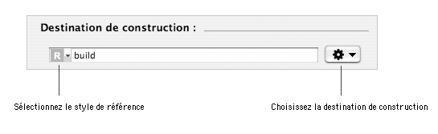
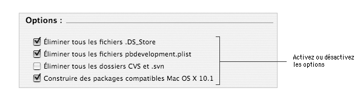
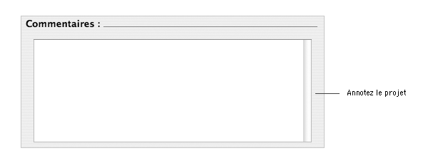

CHEMIN Table des matières > Configuration du projet
Configuration du projet
Lorsque vous créez un nouveau projet à partir d'un des modèles ou bien en important un projet PackageMaker,
les options du projet sont positionnées par défaut. La majorité de ces options concernent la construction du projet et de ses composants.
Vous pouvez personnaliser ces options.
Personnalisation de la destination de construction
Par défaut, le ou les composants du projet sont construits dans un dossier build situé au
même niveau que le projet. Vous pouvez choisir une autre destination de construction si vous le souhaitez.
Notes :
- La référence vers la destination de construction est par défaut
un chemin relatif au projet. Il est possible de basculer vers un chemin absolu en utilisant le menu local du champ d'édition.
- Le document décrit comment modifier la référence avec les dialogues standards d'ouverture de fichier.
Il est aussi possible de saisir directement le chemin dans le champ d'édition ou bien de glisser-déposer un dossier depuis le Finder
(sous réserve que le champ texte ne soit pas en cours d'édition).
|
|

Pour modifier la destination de construction :
| 1 | Choisissez Vue > Projet. |
| 2 | Cliquez sur le menu local Action de la section Destination de construction et
choisissez Choisir… . |
| 3 | Sélectionnez ou créez le dossier que vous souhaitez utiliser comme
destination de construction et cliquez sur le bouton Choisir. |
Sélection des options
Lorsque vous créez un nouveau projet, des options influençant la construction de tous les composants ou spécifiquement des
packages sont activées par défaut. Si vous le souhaitez, vous pouvez modifier cette configuration.

Pour activer ou désactiver les options :
| 1 | Choisissez Vue > Projet. |
| 2 | Cochez ou décochez les cases de la section Options. |
Voici la description des options que vous pouvez activer ou désactiver :
- Éliminer tous les fichiers .DS_Store : élimine de l'archive finale des fichiers des packages tous les fichiers
invisibles .DS_Store.
Les fichiers .DS_Store sont des fichiers créés par le Finder pour sauvegarder les options de présentations des dossiers.
Par défaut, cette option est activée.
- Éliminer tous les fichiers pbdevelopment.plist : élimine de l'archive finale des fichiers des packages
tous les fichiers pbdevelopment.plist. Les fichiers pbdevelopment.plist sont des fichiers créés
dans les dossiers Contents des applications ou bundles par Xcode ou ProjectBuilder afin de les aider à
situer les sources du projet.
Par défaut, cette option est activée.
- Éliminer tous les dossiers CVS et .svn : élimine de l'archive finale des fichiers des packages
tous les dossiers CVS et .svn. Les dossiers CVS sont créés par le gestionnaire de version du même nom. Les dossiers .svn sont créés par Subversion.
Par défaut, cette option est désactivée.
- Construire des packages compatibles Mac OS X 10.1 : construit des composants qui pourront être installés en utilisant la version
du Programme d'installation disponible avec Mac OS X 10.1.x et antérieur.
Par défaut, cette option est activée.
|
Note :
Le Programme d'installation disponible avec Mac OS X 10.1.x et antérieur ne supporte pas toutes les options d'installation disponibles sur les versions
ultérieures de Mac OS X.
|
|
Annotation du projet
Vous pouvez si vous le souhaitez ajouter des notes ou commentaires sur un projet. Ceci permet par exemple de garder une trace dans le projet des versions
d'applications installées par la version actuelle du projet.

Pour ajouter ou modifier des notes :
| 1 | Choisissez Vue > Projet. |
| 2 | Saisissez vos notes dans l'éditeur de texte disponible dans la section Commentaires. |
Auteur : Stéphane Sudre